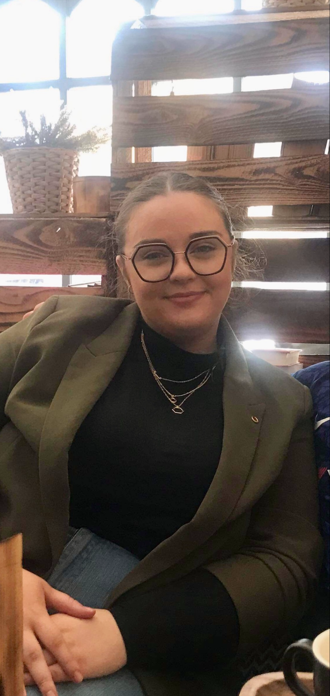
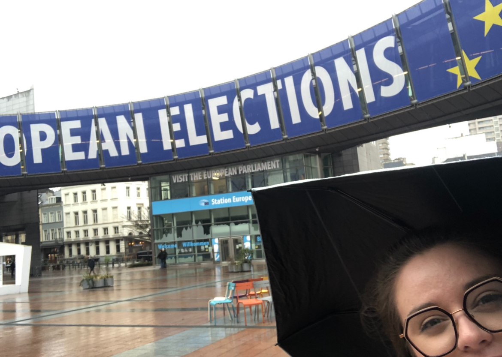
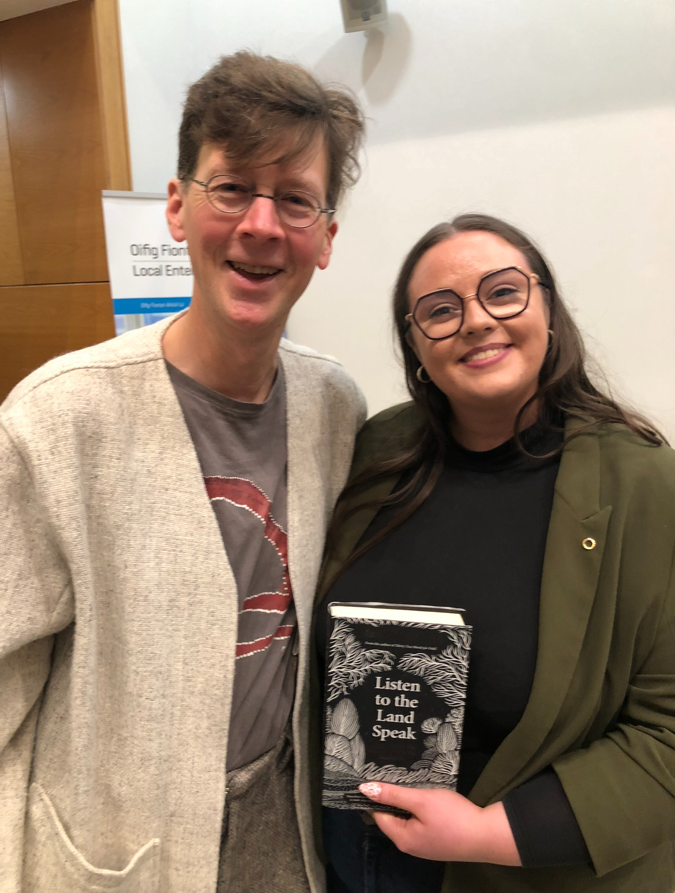
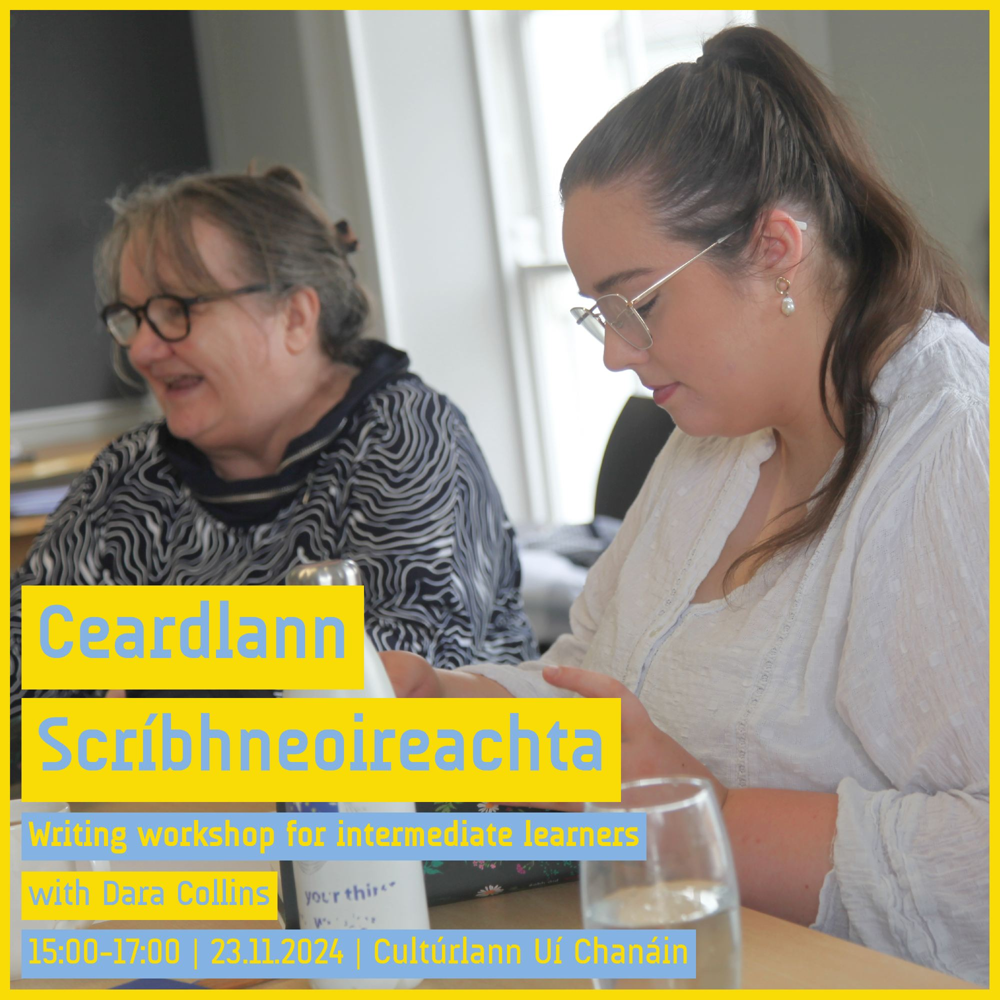

St. Paul's High School in Bessbrook was where it all began — sitting in the heart of South Armagh, surrounded by the very landscape that Irish was made to describe. The rolling drumlins, the quiet roads, the kind of community where history wasn't taught from a textbook but lived and breathed every day. It was here that the seeds were planted, even if I didn't fully know it yet.
Irish translator & teacher · South Armagh
Hi, I'm Dara
Fall in love with Irish all over again. Join me on a journey to make Gaeilge modern, manageable and fun.
nóta — every detour is part of the lesson

céad míle fáilte
Fáilte
I'm Dara, a proud Gaeilgeoir from South Armagh. By day I'm an Irish translator, and by night I teach adults Irish. Not quite as cool as Batman, but a close second!
Having grown up on this side of the border, with my cousins on the other, I couldn't for the life of me comprehend why they were lucky enough to attend an Irish-speaking school — and could have secret conversations amongst themselves at family events. Maybe not the best career plan, driven entirely by envy, but I'm in too deep now!
You can't step outside in South Armagh without putting your foot in a pile of history — from Cú Chulainn and Fionn MacCumhaill to smugglers and bandits. Makes Game of Thrones look like light reading.
I finally got the chance at Ulster University, Derry to properly scratch the itch — diving into eccentric characters and rich folklore. Then the rash spread to etymology; suddenly words themselves could tell the history for me. Or, more often, open up another can of worms. I've learned just as much about English as Irish along the way — where all our wee quirky turns of phrase have come from.
My classes are usually pure rambles, never in a straight line from where we began. Yes, we've taken detours adding 40 minutes onto our plans. Yes, we got distracted by a great viewpoint or stopped to ask directions off a lunatic local — but that's kinda the point.
For now, this site is just a way to journal my ramblings, whether a gentle stroll or a full-on Bear Grylls survival adventure. If you're learning Irish, or even just thinking about it, you might find something along the way.
Slán, Dara
from the album
Moments & Places





an turas
My Irish Journey
Click a pin to hear the story — some of these places turn up in the blog
Ulster University in Derry is where the obsession went fully off the rails — in the best possible way. What started as a curiosity turned into sleepless nights hunched over JSTOR journals, tracing words back through centuries of history. Etymology, folklore, dialect — each one a rabbit hole deeper than the last. The rash spread, as they say, and there was no going back.
Brussels and the European Committee was one of those experiences that genuinely shifts your perspective. Sitting at the table where minority languages and cultural identity are debated at a European level — Irish suddenly felt both ancient and urgent at the same time. It was a reminder that the language isn't just something we speak at home; it's something the world is watching.
an dialann
Daily Life Blog
Stories, tips and me rambling…
Blog entry
3 July 2026
“The Irish Question”
Why is everyone so sure I became an Irish teacher? On hide beetles, the Bata Scóir, and who really gets to decide which languages matter…
Read the entryBlog entry
3 July 2026
Emmentaler Appellation d'Origine Protégée Cave-Aged Emmental Swiss Cheese (200g)
A weekend at a writers' retreat, folklore collection and what I might inherit from my granda. From Castle Roche to helicopter lullabies — on the stories found in the gaps…
Read the entryBlog entry
2 July 2026
Broadcasts from the In-Between
Border towns, Michael J Murphy and the thin veil between the Ceantar and the Alltar. On Tayto vs Tayto, smuggling roads, and pointing your TV aerial towards the otherworld…
Read the entryBlog entry
7 May 2026
Dúirt Dara, or "Dara said" — what does it all mean?
Dara says a lot. Not always relevant, useful or even 100% factual, but I like to think it's usually interesting. From oral tradition to border graveyards — this one goes places…
Read the entry
trí lionsa
Visual Journal
Photography has always been part of how I see things — long before the words came, I was framing the world through a viewfinder. This is a small collection of moments caught along the way.
All shots taken on a Canon EOS R50.
fostaigh mé
Hire me
As well as keeping this journal, I'm available to hire as a photographer for events of all kinds — weddings, birthdays, christenings, community festivals, sports days and family portrait sessions among them.
Based in South Armagh, but happy to travel — locally or anywhere in Ireland.